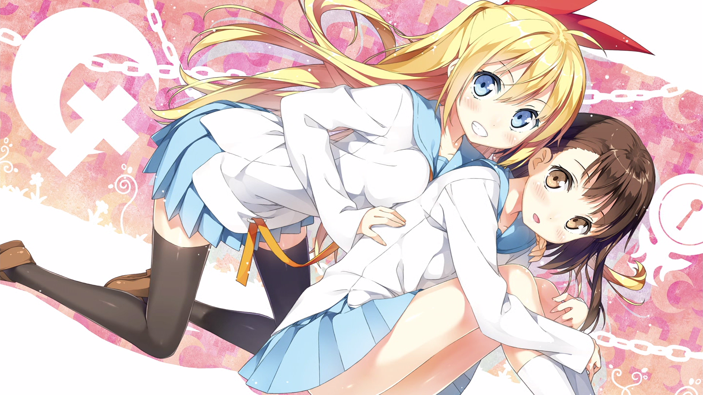
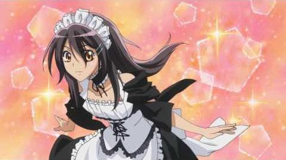

Shojos
-
 Skip Beat : Une jeune cruche part à Tokyo avec l'amour de sa vie (idole #2 du Japon) et bosse comme son larbin pendant qu'il profite de la belle vie ! Sauf qu'un jour il va trop loin (en vrai il l'aime pas).
pour se venger elle décide de devenir actrice, et va dans la boite du pire ennemi du mec : l'idole n#1 du Japon !
Skip Beat : Une jeune cruche part à Tokyo avec l'amour de sa vie (idole #2 du Japon) et bosse comme son larbin pendant qu'il profite de la belle vie ! Sauf qu'un jour il va trop loin (en vrai il l'aime pas).
pour se venger elle décide de devenir actrice, et va dans la boite du pire ennemi du mec : l'idole n#1 du Japon ! - Nisekoi : attendez la description par Victor-sama !
-
 Love so Life : Une jeune orpheline de 16 ans garde des jumeaux trop "mignons" (perso je hais les enfants...) et le père est un jeune (enfin il a au moins 25 piges) trop beau et célèbre ! Bien sur ils tombent amoureux l'un de l'autre (et se font leur premier calin au chapitre 53) (ce qui ne plait pas au meilleur ami orphelin de la fille, qui tente depuis des années de s'enfuir de la friend zone...)
Love so Life : Une jeune orpheline de 16 ans garde des jumeaux trop "mignons" (perso je hais les enfants...) et le père est un jeune (enfin il a au moins 25 piges) trop beau et célèbre ! Bien sur ils tombent amoureux l'un de l'autre (et se font leur premier calin au chapitre 53) (ce qui ne plait pas au meilleur ami orphelin de la fille, qui tente depuis des années de s'enfuir de la friend zone...) - Maid-sama : la school life de la présidente du conseil des élèves (tyranique, très à cheval sur le règlement surtout envers les garçons car elle les trouve vraiment crades) qui bosse a mi-temps dans un maid café, alors que c'est interdit par le règlement de son lycée. Et bien sûr un jour le mec #1 du lycée (trop fo) découvre son petit secret...
© Ambonati no Ken and Lin Feixia-chan
 Death Note : Un garçon avec aussi 4 de GPA découvre un carnet spécial : si il indique un nom dedans, la personne désignée meurt... Il décide donc de faire justice, ce qui n'est pas au gout des autres qui se demandent qui est ce mystérieux tueur...
Death Note : Un garçon avec aussi 4 de GPA découvre un carnet spécial : si il indique un nom dedans, la personne désignée meurt... Il décide donc de faire justice, ce qui n'est pas au gout des autres qui se demandent qui est ce mystérieux tueur...